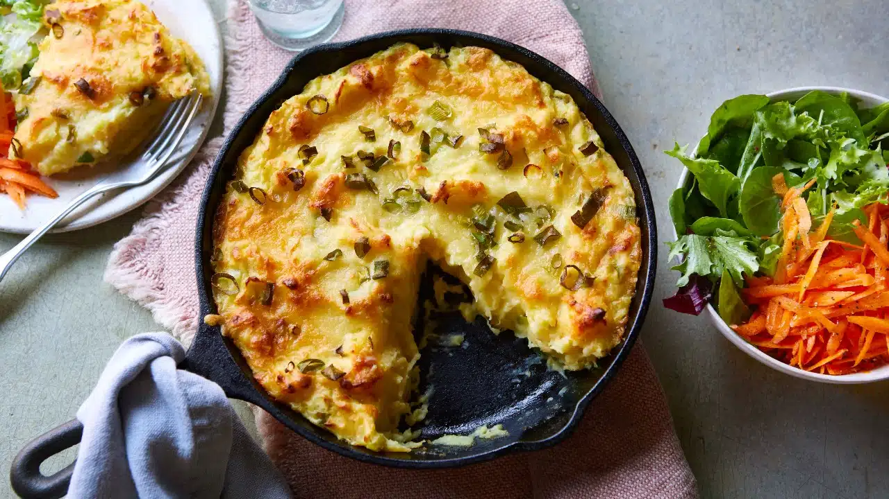

Potato Pie
It is time to dive into a deliciously comforting dish the potato pie. This creation is pure veggie bliss, combining the creamiest mashed potatoes with a rainbow of tender veggies, zesty herbs, and a glorious cheesy topping.
Preparation time
- Total: Approximately 60 minutes
- Preparation: 30 minutes
Ingredients
- 1/2 kg Potatoes
- 1/2 cup Peas (shelled)
- 1 Carrot (small) Cauliflower Florets (a few)
- 2 tsp Herbs (fresh and minced)
- 1 Onion (medium, minced) 1/2 tbsp Pepper Powder
- Salt to taste
- 2 tbsp Butter
- 4 tbsp Bread Crumbs
- 1/2 cup Cheese (grated)
- 1 tbsp Tomato Ketchup
Instructions
- step1: Boil, peel and mash potatoes while still warm with a pinch of salt, pepper powder and 1 tblsp butter.
- step2: Chop carrots and cauliflower. Cook with peas and some salt.
- step3: Heat oil, fry onions till translucent, add cooked vegetables and stir fry. Add pepper powder, salt, herbs, tomato ketchup and some of the cheese, mix thoroughly, remove from fire. Grease a pie dish thoroughly with some oil, sprinkle 3/4th of the bread crumbs over the entire surface.
- step4: On this, spread the potato dough, even out the surface. Top the potato with vegetable mixture, spread evenly. step5: Cover this with the rest of the cheese. Melt the remaining butter, pour over cheese, sprinkle bread crumbs very lightly on this.
- step6: Bake in a moderate oven for 20-30 minutes or till top is browned and cheese has melted. Serve hot with soup and buttered bread.
Nutrition
The table below shows nutritional values per serving without the additional fillings.
| Calories | 330kcal |
|---|---|
| Carbs | 50g |
| Protein | 18g |
| Fat | 7g |